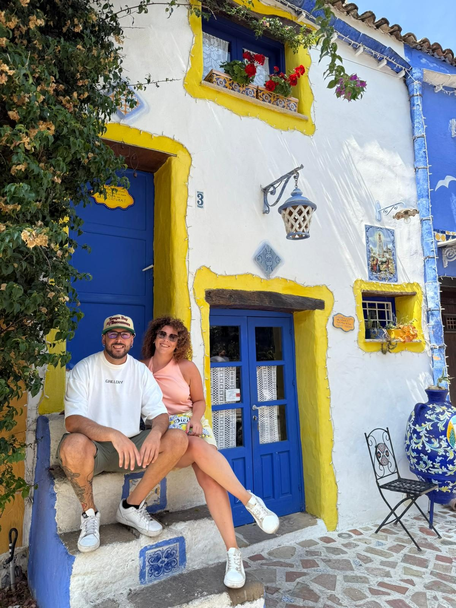
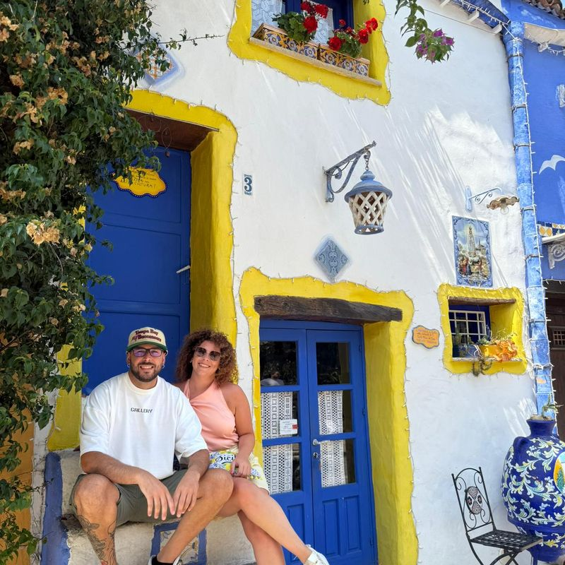

Apicoltori · Conza della Campania · Irpinia
Francesco
& Rosanna
Una scelta di vita, un territorio, un miele.
Vie del Lago è una storia d'amore per la natura.

La nostra storia
Non siamo nati qui.
Siamo venuti per scelta.
Francesco e Rosanna non sono originari dell'Irpinia. Ci siamo trasferiti per amore della natura, attratti dalla Valle dell'Ofanto, dal Lago di Conza e da un ecosistema che pochi conoscono e ancora meno sanno proteggere.
Francesco ha un percorso scientifico solido: laurea triennale in Enologia e Viticoltura, laurea magistrale in Scienze e Tecnologie Agrarie, dottorato in Food Science. Si è avvicinato alle api durante il lavoro in dipartimento, dove la ricerca sulla biodiversità e la sostenibilità degli ecosistemi agricoli lo ha portato a capire il ruolo fondamentale dei pronubi nella catena del cibo e nella conservazione del paesaggio. Da quella consapevolezza scientifica è nata Vie del Lago.
Rosanna lo ha seguito per amore — e non ha mai smesso di supportarlo in ogni scelta. Vie del Lago è un progetto a due: nelle decisioni, nel lavoro quotidiano, nella filosofia del brand.
«Non abbiamo mai voluto fare miele industriale. Vogliamo fare il miele di questo posto specifico, di questa stagione specifica. Se non è abbastanza, preferiamo non produrlo.»
— Francesco, apicoltore
Cosa ci guida
I valori che non negoziamo
Stanzialità assoluta
Le nostre api non si spostano. L'apiario Priscilla è fisso nell'Oasi di Conza. Questo significa che ogni miele racconta un solo luogo, non una somma di territori. È la condizione necessaria per parlare di cru.
Zero pastorizzazione
Non riscaldiamo il miele. Non lo filtriamo oltre il necessario. Non aggiungiamo nulla. La pastorizzazione prolunga la vita commerciale ma distrugge enzimi, profumi e complessità. Noi scegliamo la complessità.
Trasparenza totale
Pubblichiamo i dati dell'alveare in tempo reale: temperatura, umidità, peso delle famiglie. Ogni produzione ha un'analisi melissopalinologica. Non ci sono segreti nel processo — solo il mistero naturale delle api.
Rispetto per l'ecosistema
L'Oasi WWF è il nostro habitat condiviso con decine di specie protette. Nessun trattamento antibiotico. Gestione integrata della varroa con acido ossalico. Le api sono parte dell'ecosistema, non uno strumento industriale.
Micro-lotto per scelta
Non cerchiamo di produrre di più. I micro-lotti hanno un limite naturale dato dal territorio e dalle stagioni. Quando finiscono, finiscono. L'anno prossimo sarà un miele diverso — magari migliore, magari più scarso. È così che funziona.
Rapporto diretto
Chi compra il nostro miele scrive a Francesco o Rosanna. Non a un customer service. Ogni ordine è una conversazione. Conosciamo i nostri clienti per nome, e spesso sappiamo già cosa preferiscono.
Come è iniziata
La storia di Vie del Lago
-
La formazione
Dalla scienza all'apiario
Francesco si laurea in Enologia e Viticoltura, poi in Scienze e Tecnologie Agrarie, infine consegue il dottorato in Food Science. Durante gli anni in dipartimento, la ricerca su biodiversità, sostenibilità e impollinatori gli fa capire quanto le api siano centrali non solo nella produzione alimentare, ma nella tenuta degli ecosistemi agricoli.
-
La scelta
Trasferirsi dove c'era già la risposta
Francesco e Rosanna non sono arrivati in Irpinia per caso. Avevano idee già precise su come produrre miele di qualità — un miele che fosse specchio fedele del territorio. Si sono stabiliti direttamente a Conza della Campania, dove oggi si trovano gli apiari, perché quel luogo incarnava esattamente ciò che cercavano: un ecosistema integro, l'Oasi WWF, le argille dell'Ofanto, fioriture rare come la Sulla.
-
L'apiario Priscilla
Un progetto a due, dall'inizio
Rosanna ha seguito Francesco per amore — e non ha mai smesso di supportarlo. Il brand Vie del Lago nasce insieme: il nome dell'apiario Priscilla, la filosofia della non-pastorizzazione, il concetto di miele come «cru». Iniziano le prime vendite dirette — i clienti scrivono, chiedono, tornano.
-
Oggi
Tre mieli, un territorio, zero compromessi
Millefiori, Acacia e Sulla. Tre cru stagionali, micro-lotto, con dati pubblicati in tempo reale. I clienti prenotano la stagione successiva già mentre quella corrente si esaurisce. Vie del Lago è piccola per scelta — e intende restarlo.
Scrivici direttamente
Ogni messaggio arriva a Francesco o Rosanna — nessun assistente virtuale, nessun chatbot. Se hai domande sul miele, sull'apiario o vuoi prenotare un micro-lotto, siamo qui.